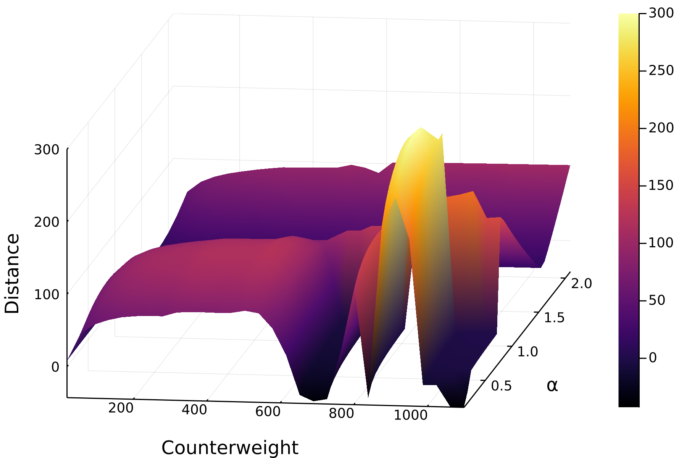

Control flow
Last updated on 2023-08-17 | Edit this page
Overview
Questions
- “What are for and while loops?”
- “How to use conditionals?”
- “What is an interface?”
Objectives
Conditionals
Before starting to work in a new document, Melissa has to:
Activate her environment
JULIA
using Pkg
Pkg.activate(joinpath(@__DIR__, "projects", "trebuchet"))
Pkg.instantiate()OUTPUT
Activating project at `~/projects/trebuchet`
Importing the package under its modified name
JULIA
import Trebuchet as TrebuchetsDefining the structures
JULIA
mutable struct Trebuchet <: AbstractVector{Float64}
counterweight::Float64
release_angle::Float64
end
struct Environment
wind::Float64
target_distance::Float64
endNow that Melissa knows which method to add she thinks about the implementation.
If the index is 1 she wants to set
counterweight while if the index is 2 she
wants to set release_angle and since these are the only two
fields she wants to return an error if anything else comes in. In Julia
the keywords to specify conditions are if,
elseif and else, closed with an
end. Thus she writes
JULIA
function Base.setindex!(trebuchet::Trebuchet, v, i::Int)
if i === 1
trebuchet.counterweight = v
elseif i === 2
trebuchet.release_angle = v
else
error("Trebuchet only accepts indices 1 and 2, yours is $i")
end
endInterfaces
setindex! is actually one function of a widespread
interface in the Julia language: AbstractArrays.
An interface is a collection of methods that are all implemented by a
certain type. For example, the Julia
manual lists all methods that a subtype of
AbstractArray need to implement to adhere to the
AbstractArray interface:
-
size(A)returns a tuple containing the dimensions ofA -
getindex(A, i::Int)returns the value associated with indexi -
setindex!(A, v, i::Int)writes a new valuevat the indexi
If Melissa implements this interface for the Trebuchet
type, it will work with every function in Base that accepts
an AbstractArray.
She also needs to make Trebuchet a proper subtype of
AbstractArray as she tried in the types episode. Therefore she
restarts her REPL and redefines Trebuchet and
Environment, as well as the slurp-and-splat
shoot_distance function:
JULIA
using Pkg
Pkg.activate("projects/trebuchet")
import Trebuchet as Trebuchets
mutable struct Trebuchet <: AbstractVector{Float64}
counterweight::Float64
release_angle::Float64
end
struct Environment
wind::Float64
target_distance::Float64
end
function shoot_distance(args...)
Trebuchets.shoot(args...)[2]
end
function shoot_distance(trebuchet::Trebuchet, env::Environment)
shoot_distance(env.wind, trebuchet.release_angle, trebuchet.counterweight)
endOUTPUT
shoot_distance (generic function with 2 methods)Then she goes about implementing the AbstractArray
interface.
JULIA
Base.size(trebuchet::Trebuchet) = tuple(2)
Base.getindex(trebuchet::Trebuchet, i::Int) = getfield(trebuchet, i)
function Base.setindex!(trebuchet::Trebuchet, v, i::Int)
if i === 1
trebuchet.counterweight = v
elseif i === 2
trebuchet.release_angle = v
else
error("Trebuchet only accepts indices 1 and 2, yours is $i")
end
endWith the new Trebuchet defined with a complete
AbstractArray interface, Melissa tries again to modify a
counterweight by index:
JULIA
trebuchet = Trebuchet(500, 0.25pi)OUTPUT
2-element Trebuchet:
500.0
0.7853981633974483JULIA
trebuchet[1] = 2OUTPUT
2JULIA
trebuchetOUTPUT
2-element Trebuchet:
2.0
0.7853981633974483Loops
Now Melissa knows how to shoot the virtual trebuchet and get the distance of the projectile, but in order to aim she needs to take a lot of trial shots in a row. She wants her trebuchet to only shoot a hundred meters.
She could execute the function several times on the REPL with different parameters, but that gets tiresome quickly. A better way to do this is to use loops.
But first Melissa needs a way to improve her parameters.
Digression: Gradients
The shoot_distance function takes three input parameters
and returns one value (the distance). Whenever we change one of the
input parameters, we will get a different distance.
The gradient of a function gives the direction in which the return value will change when each input value changes.
Since the shoot_distance function has three input
parameters, the gradient of shoot_distance will return a
3-element Array: one direction for each input
parameter.
Thanks to automatic
differentiation and the Julia package ForwardDiff.jl
gradients can be calculated easily.
Melissa uses the gradient function of
ForwardDiff.jl to get the direction in which she needs to
change the parameters to make the largest difference.
The correct solution is 4: ] to enter pkg mode, then
JULIA
pkg> add ForwardDiffJULIA
using ForwardDiff: gradient
imprecise_trebuchet = Trebuchet(500.0, 0.25pi);
environment = Environment(5.0, 100.0);
grad = gradient(x ->(shoot_distance([environment.wind, x[2], x[1]])
- environment.target_distance),
imprecise_trebuchet)OUTPUT
2-element Vector{Float64}:
-0.12516519503998055
-49.443442438172205Melissa now changes her arguments a little bit in the direction of the gradient and checks the new distance.
JULIA
better_trebuchet = imprecise_trebuchet - 0.05 * grad;
shoot_distance([5, better_trebuchet[2], better_trebuchet[1]])OUTPUT
-2.785549535224487Great! That didn’t shoot past the target, but instead it landed a bit too short.
JULIA
better_trebuchet = imprecise_trebuchet - 0.04 * grad
shoot_distance([environment.wind, better_trebuchet[2], better_trebuchet[1]])
120.48753521261001JULIA
better_trebuchet = imprecise_trebuchet - 0.03 * grad
shoot_distance([environment.wind, better_trebuchet[2], better_trebuchet[1]])
107.80646596787481JULIA
better_trebuchet = imprecise_trebuchet - 0.02 * grad
shoot_distance([environment.wind, better_trebuchet[2], better_trebuchet[1]])
33.90699307740854JULIA
better_trebuchet = imprecise_trebuchet - 0.025 * grad
shoot_distance([environment.wind, better_trebuchet[2], better_trebuchet[1]])
75.87613276409223Looks like the “best” trebuchet for a target 100 m away will be between 2.5% and 3% down the gradient from the imprecise trebuchet.
For loops
Now that Melissa knows it is going in the right direction she wants
to automate the additional iterations. She writes a new function
aim, that performs the application of the gradient
N times.
JULIA
function aim(trebuchet, environment; N = 5, η = 0.05)
better_trebuchet = copy(trebuchet)
for _ in 1:N
grad = gradient(x -> (shoot_distance([environment.wind, x[2], x[1]])
- environment.target_distance),
better_trebuchet)
better_trebuchet -= η * grad
end
return Trebuchet(better_trebuchet[1], better_trebuchet[2])
end
better_trebuchet = aim(imprecise_trebuchet, environment);
shoot_distance(environment.wind, better_trebuchet[2], better_trebuchet[1])OUTPUT
-2.2195176928658915This is a highly non-linear system and thus very sensitive. The distances across different values for the counterweight and the release angle α look like this: 
While loops
Melissa finds the output of the above aim function too
unpredictable to be useful. That’s why she decides to change it a bit.
This time she uses a while-loop to run the iterations until
she is sufficiently near her target.
(Hint: ε is
\epsilontab, and η is
\etatab.)
JULIA
function aim(trebuchet, environment; ε = 0.1, η = 0.05)
better_trebuchet = copy(trebuchet)
hit = x -> (shoot_distance([environment.wind, x[2], x[1]])
- environment.target_distance)
while abs(hit(better_trebuchet)) > ε
grad = gradient(hit, better_trebuchet)
better_trebuchet -= η * grad
end
return Trebuchet(better_trebuchet[1], better_trebuchet[2])
end
better_trebuchet = aim(imprecise_trebuchet, environment);
shoot_distance(better_trebuchet, environment)OUTPUT
100.05601729579894That is more what she had in mind. Your trebuchet may be tuned differently, but it should hit just as close as hers.